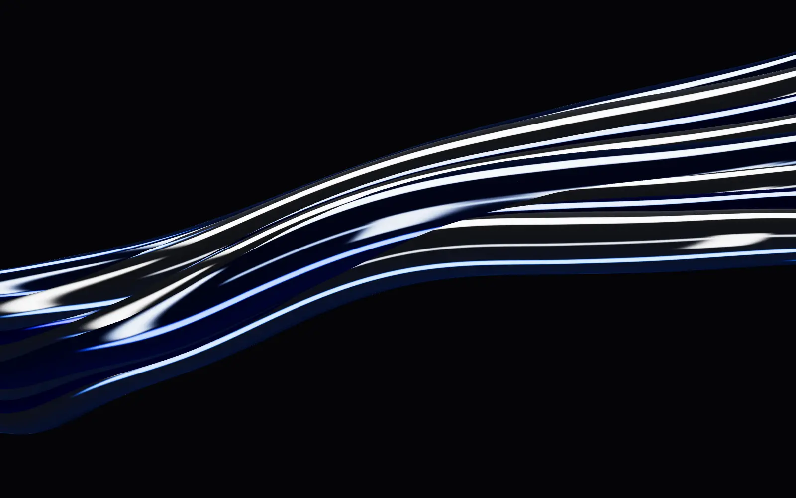
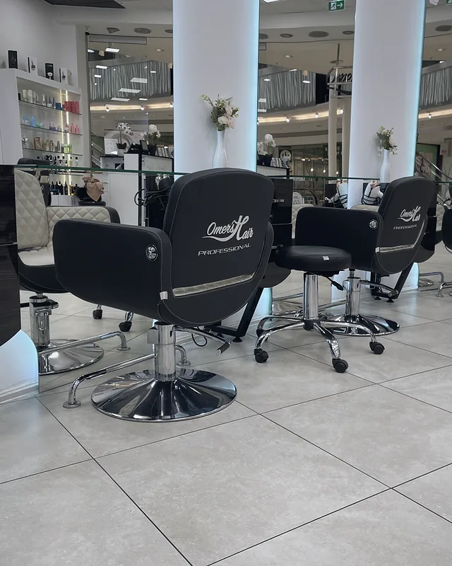
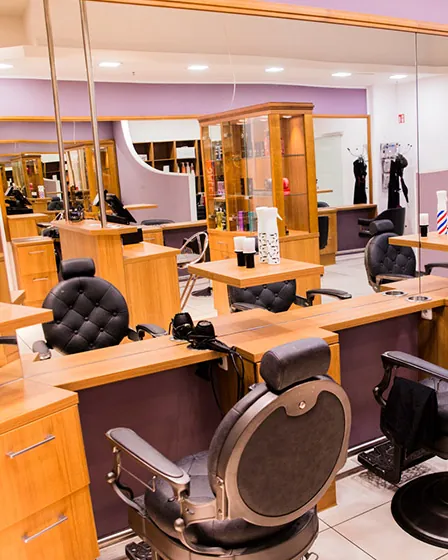
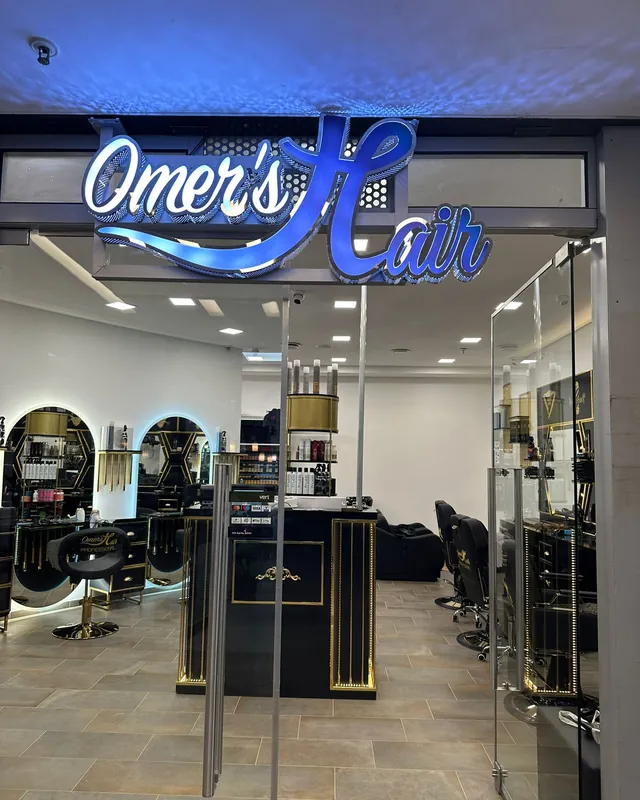
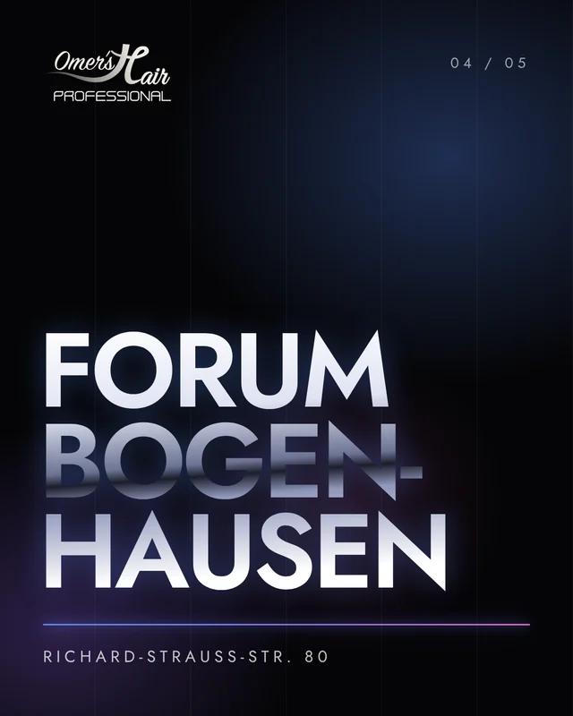
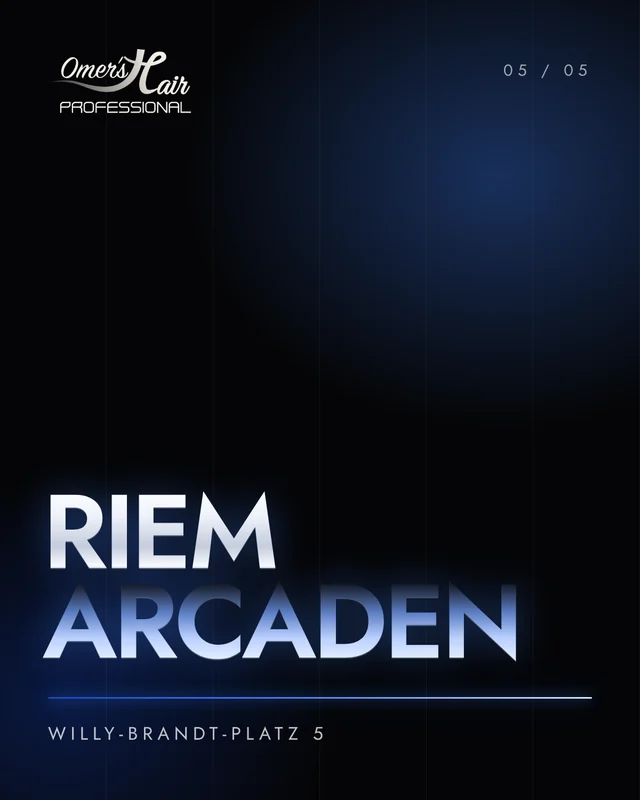

01 Salons
Wählen Sie Ihren Spiegel.
-

-

-

-

Bogenhausen · Forum
Salon Forum Bogenhausen
Richard-Strauss-Str. 80 · 81679 MünchenMo–Fr 9:00–19:00 · Sa 9:00–16:00
-

02 Handwerk
Meisterhand in jedem Salon.
Hinter Omer’s Hair steht Friseurmeister Omer Khalil Kotschali – und ein Anspruch, der überall gilt: ausführliche Beratung, saubere Arbeit und ein Ergebnis, das zu Ihnen passt.
- 01
Balayage & Farbe
Feine Strähnen, Balayage, Glossing und Coloration – mit Zeit für die Farbberatung.
- 02
Schnitt & Styling
Vom klassischen Schnitt bis zum Föhn-Styling, für Damen, Herren und Kinder.
- 03
Festfrisuren
Hochsteckfrisuren und Styling für Hochzeit, Abschlussball und besondere Tage.
- 04
Barber & Bart
Maschinenschnitt, Bartmodell und Bartpflege – im eigenen Barber Shop im MIRA.
03 Stimmen
Was Gäste über uns sagen.
Echte Bewertungen aus dem Salon MIRA, gesammelt nach jedem Termin auf Planity.
Tolle Beratung, super Schnitt und Balayage-Färbung, sehr aufmerksam. Ich bin sehr zufrieden :-)
Nada ist einfach nur zauberhaft – von der herzlichen Beratung über den Schnitt! Meine Haare sehen jetzt wieder so wunderschön gepflegt aus.
Donya und Nada nehmen sich viel Zeit für die Farbberatung! Fachlich top ausgeführt! Habe noch nie so feine Strähnchen bekommen wie dort.
Vom herzlichen Empfang über den gastfreundlichen Kaffee und natürlich erst recht meine schönen neuen Haare :)
Wie immer super Schnitt für mich und meinen Sohn! Sehr freundlich und super Friseure!
Alle sind super nett, gehe gerne dahin. Mit Termin keine Wartezeit.
Ein kleiner Plausch beim Haarewaschen, saubere Arbeit und ein Lächeln auf den Lippen.
Sima macht ihre Arbeit einfach hervorragend! Alle sind sehr nett, man fühlt sich sehr wohl.
04 Einblicke
@omers_hair_professional
Neue Looks, Farben und Blicke hinter die Kulissen – auf Instagram. Der Salon MIRA hat zusätzlich einen eigenen Kanal.
Wir suchen Verstärkung.
Friseurinnen, Friseure, Barber und Auszubildende: Wenn Sie Lust auf ein herzliches Team haben, schreiben Sie uns ein paar Zeilen – gern mit Fotos Ihrer Arbeit.